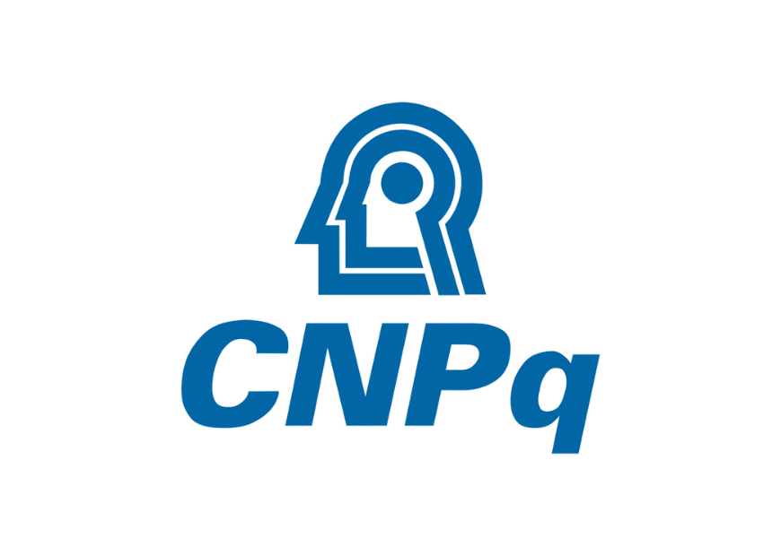
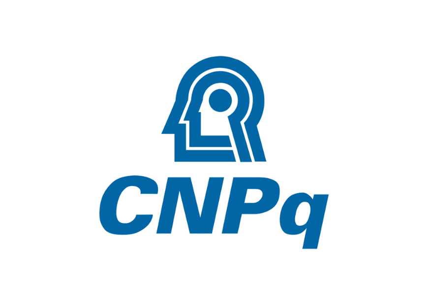

Maria, Rio Curiaú
Práticas comunicacionais no Quilombo.
Este Observatório é fruto da pesquisa sobre a Epistemologia da Escuta, desenvolvida na UNIFAP. Investigamos as tecnologias ancestrais e o protagonismo de mulheres comunicadoras na Amazônia Legal.
Práticas comunicacionais no Quilombo.
 
